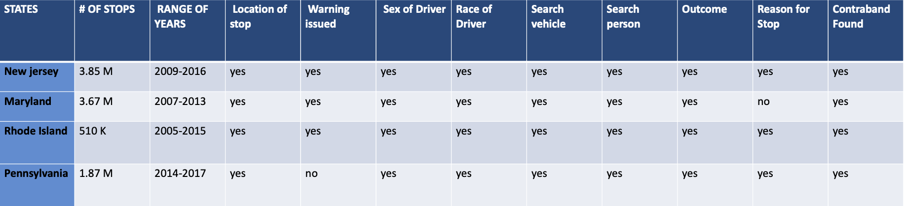
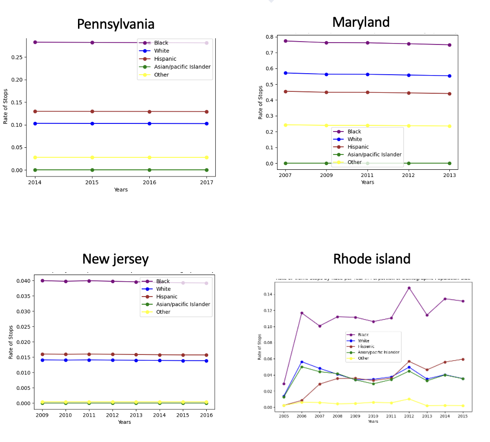
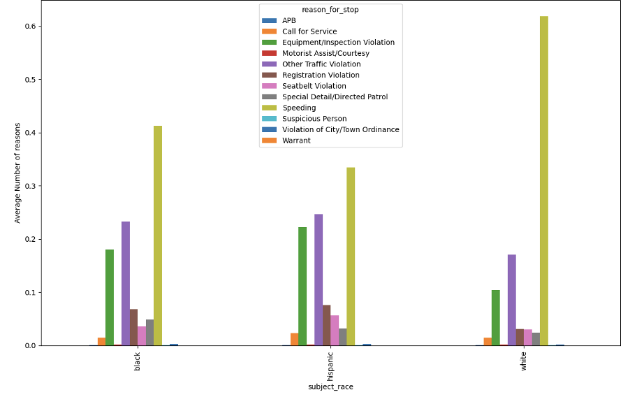
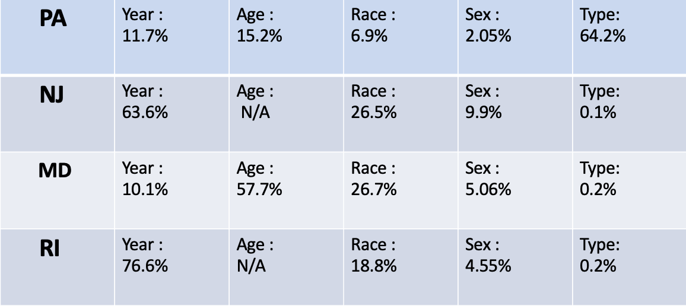

OBJECTIVE
I focused this study primarily in the Northeast region of the States which include, New Jersey, Maryland, Rhode Island, and Pennsylvania. From Stanford's Open Policing Project, I have gathered, compiled and analyzed datasets of these four states.
- Naturally, various criteria must be considered in order to correctly determine whether or not discrepancies exist. For instance, the percentage of each demographic by region, as well as the stop search and outcome rates. This may be further subdivided by race, gender, year, and even district.
- The table below contains an approximation of population by state as well as average data on demographic population. It is critical to remember these percentages since they will aid in our analysis later on.
MATERIALS/METHOD
- Data setswere aquired from Stanford Open Policing Project. Stanford Open Policing Project.
- The table below lists some of the major characteristics that were utilised while carrying out this project.
Notable Features of the Datasets
- All coding was done using Python's various libraries, which included:
- Pandas
- Numpy/Scipy
- Sklearn
- Matplotlib
- In this project, I was also able to employ the Sklearn Library to implement a Machine Learning Algorithm called Decision Tree.
- What is Machine Learning?
- Machine learning is a subfield of artificial intelligence, which is broadly defined as the capability of a machine to imitate intelligent human behavior. Artificial intelligence systems are used to perform complex tasks in a way that is similar to how humans solve problems.
- For starters, Machine learning is classified into three types: supervised learning, unsupervised learning, and reinforcement learning.
- Supervised is distinguished by the use of labeled datasets to train algorithms that properly categorize data or predict outcomes. As input data is fed into the model, the weights are adjusted until the model is well fitted, which occurs as part of the cross validation process.
- Unsupervised ,without the need for human interaction, ear algorithms that uncover hidden patterns or data groupings. Because of its capacity to detect similarities and contrasts in data, it is a perfect option for exploratory data analysis, cross-selling techniques, consumer segmentation, and picture identification.
- Reinforcement learning is a machine learning training strategy that rewards positive actions while penalizing undesirable ones. A reinforcement learning agent, in general, can detect and comprehend its surroundings, act, and learn via trial and error.
- What is a Decision Tree?
- A decision tree is a form of supervised machine learning that is used to categorize or predict depending on the answers to a prior series of questions. The model is supervised learning in the sense that it is trained and evaluated on data that contains the desired classification.
- When visualizing a decision tree it is best to think of a flowchart. Take this for example:
- Each node represents a feature. The features in this case consists of salary, commute and whether free coffee is provided. The higher the feature is in the tree the greater importance it has to the final outcome.
- Typically, data analysts divide the data set into training and testing sections in a 4:1 ratio. The decision tree builds and fits the pattern in the training portion, and the accuracy of the model is measured in the testing section.
RESULTS
- The table below shows the average number of stops per race in each state. In terms of demographic population size, I noticed that while stop rates in most states remain steady, there is significant difference between the states.
Rate of Stops Per Year Per Race in Proportion to Demographic
- Pennsylvania
- Black stops rates average about 2.5x greater the white people in proportion to their population.
- Hispanic stop rates average about 1.2x greater than white people.
- Maryland
- Black stops rates average about 1.35x greater the white people in proportion to their population.
- Hispanic stop rates average about 22% greater than white people.
- New Jersey
- Black stops rates average about 2.67x greater the white people in proportion to their population.
- Hispanic and white individuals average about the same in New Jersey with only a difference of 0.14%.
- Rhode Island
- The range in years in Rhode Island is much greater then the other three states, hence seeing such fluctuation is not totally abnormal. Despite this however, there remains a consistent disparity between black and white individuals.
- Between the years 2005-2006, black stops rates jumped 10% while white stops rates only jumped about 5%. Interestingly, Black stops rates steadily increased at a greater rate then both white and Hispanic stop rates.
- As Rhode Island was the only state of the group with fluctuating patter, I decided to looked at the average reasons for stops.
Average reasons for stops in Rhode Island
- The chart above shows the percentage of common reasons for stoppage for each race in Rhode Island. Although speeding is the most common across all three ethnicities, equipment/inspection violations are 10% more common among black and Hispanic people.
- However, this might be due to the concentration of a specific race being higher in 'busier' sites with increased police activity. To furthur determine whether there is a bias, let's examine the success rates of the searches.
- Taking Becker's outcome analysis into account,we can concur that if the search rates are higher in one race while the success rates are lower than its counterparts, then evidentially, bias exists.
- Consider Pennsylvania:
- The search rate for black people is around 70% with just approximately 27% success accuracy.
- In comparison,the search rate for white people is 17%, with an average success rate of 30%.
- This suggests that black individuals are getting searched with less criteria and less eveidence then white people do.
- Here is a more visual graph of White v. Minority success rates in Pennsylvania to better get the picture:
- Next, using the decision tree algorithm, I was able to determine not just the likelihood of a search occurring based on year, age, race, and gender, but also the outcome if a search did indeed occur.
- Of course, all of these predictions are within the range of accuracy. Prediction of search rate averages 90% across states, whereas accuracy of prediction of outcomes is about 78%.
- Here is a table that contains the feature importance of the outcome modeled Decision Tree. Remember in decision trees the higher the feature in the tree the greater importance it serves.
Importance of Features by State
- Pennsylvania rates 'types' (standing fortypeof search) as its most important search. i found that if the search escalates to pedestrian level, the outcome almost always results in an arrest. Additionally, if the driver happened to be black, between the ages 19-30, the situation almost always leads to an arrest.
- Compared to Pennsylvania, both New Jersey and Rhode Island consider 'years' to be the most important festure. This makes sense because they provide the greatest range in years.
- Another noteworthy observation I made is that age is quite important. Sometimes even more so than race. Maryland, for example, holds age at about 57% of importance. I observed that the younger you are, the more probable it is that you will get arrested.
- Here is the first couple of levels of the outcome Decision Tree of Pennsylvania. And to give you a size reference, next to it is the full Decision Tree.
CONCLUSION/OUTLOOK
- In conclusion, it is quite apparant that some bias does exist, particularly in Pennsylvania and Rhode Island.
- Future Prospects
- More enforcement on public data in every jurisdiction
- Implement AI system to it records minimum requirements to solidify the integrity of the data
- Analysis throughout traffic law changes
References
- Becker, G. Nobel Lecture: The Economic way of looking at behavior. J. Polit.Econ. 101, 385-409 (1993)
- Becker, G. Te Economics of Discrimination (Univ. of Chicago Press, 1957)
- “The Stanford Open Policing Project.” Openpolicing.stanford.edu, 2020,openpolicing.stanford.edu/data/
- Police. “2021 Police Violence Report.” Policeviolencereport.org, 2021, policeviolencereport.org/
- The 2022 LSAMP Summer REU Program is sponsored by - NSF HRD 1712733
- Huda-Cris. “Huda-Cris/Analysis-of-Trafic-Stops-Project.” GitHub, 2022,